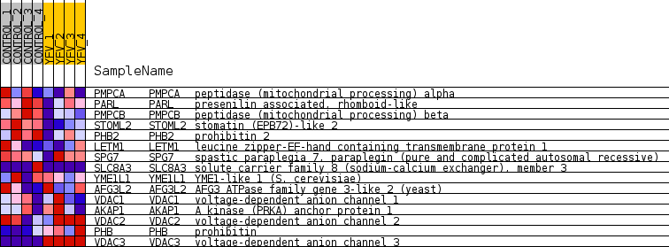
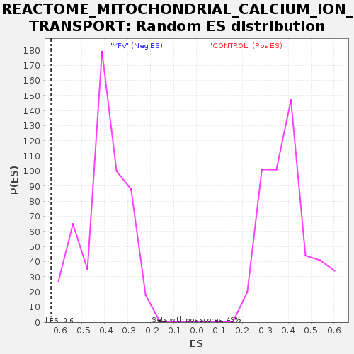

Profile of the Running ES Score & Positions of GeneSet Members on the Rank Ordered List
| Dataset | MATRIZ_GSE99081_collapsed_to_symbols.gsea_CLASE_99081.cls#CONTROL_versus_YFV |
| Phenotype | gsea_CLASE_99081.cls#CONTROL_versus_YFV |
| Upregulated in class | YFV |
| GeneSet | REACTOME_MITOCHONDRIAL_CALCIUM_ION_TRANSPORT |
| Enrichment Score (ES) | -0.6339401 |
| Normalized Enrichment Score (NES) | -1.5821052 |
| Nominal p-value | 0.0 |
| FDR q-value | 0.075090684 |
| FWER p-Value | 0.966 |
| SYMBOL | TITLE | RANK IN GENE LIST | RANK METRIC SCORE | RUNNING ES | CORE ENRICHMENT | |
|---|---|---|---|---|---|---|
| 1 | PMPCA | peptidase (mitochondrial processing) alpha | 1673 | 0.500 | -0.0403 | No |
| 2 | PARL | presenilin associated, rhomboid-like | 2007 | 0.483 | -0.0002 | No |
| 3 | PMPCB | peptidase (mitochondrial processing) beta | 2885 | 0.354 | -0.0098 | No |
| 4 | STOML2 | stomatin (EPB72)-like 2 | 3339 | 0.305 | 0.0006 | No |
| 5 | PHB2 | prohibitin 2 | 5191 | 0.138 | -0.0961 | No |
| 6 | LETM1 | leucine zipper-EF-hand containing transmembrane protein 1 | 5227 | 0.135 | -0.0813 | No |
| 7 | SPG7 | spastic paraplegia 7, paraplegin (pure and complicated autosomal recessive) | 5769 | 0.093 | -0.1030 | No |
| 8 | SLC8A3 | solute carrier family 8 (sodium-calcium exchanger), member 3 | 7281 | 0.000 | -0.1961 | No |
| 9 | YME1L1 | YME1-like 1 (S. cerevisiae) | 9783 | -0.016 | -0.3483 | No |
| 10 | AFG3L2 | AFG3 ATPase family gene 3-like 2 (yeast) | 9989 | -0.025 | -0.3578 | No |
| 11 | VDAC1 | voltage-dependent anion channel 1 | 10627 | -0.069 | -0.3884 | No |
| 12 | AKAP1 | A kinase (PRKA) anchor protein 1 | 11484 | -0.146 | -0.4228 | No |
| 13 | VDAC2 | voltage-dependent anion channel 2 | 13387 | -0.349 | -0.4962 | No |
| 14 | PHB | prohibitin | 15623 | -0.899 | -0.5211 | Yes |
| 15 | VDAC3 | voltage-dependent anion channel 3 | 16224 | -4.452 | 0.0009 | Yes |

